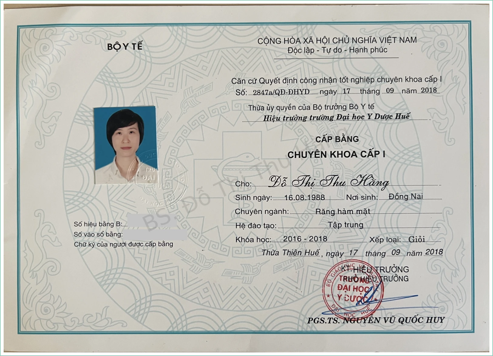
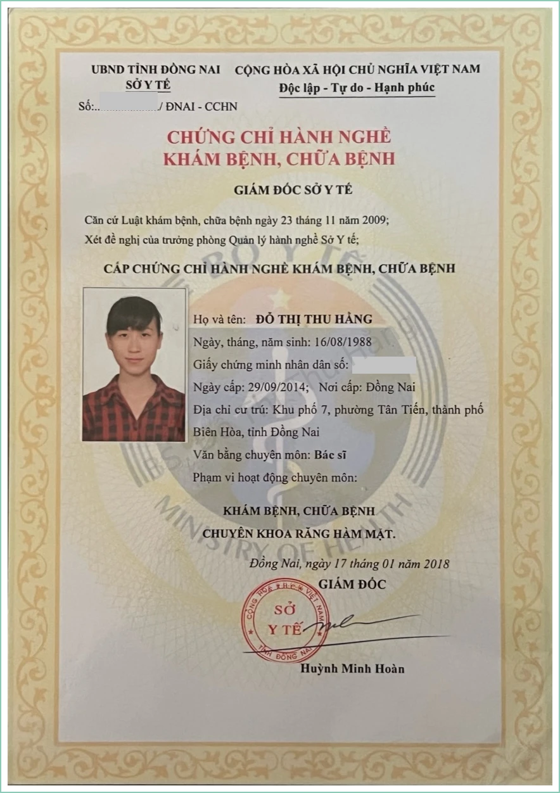
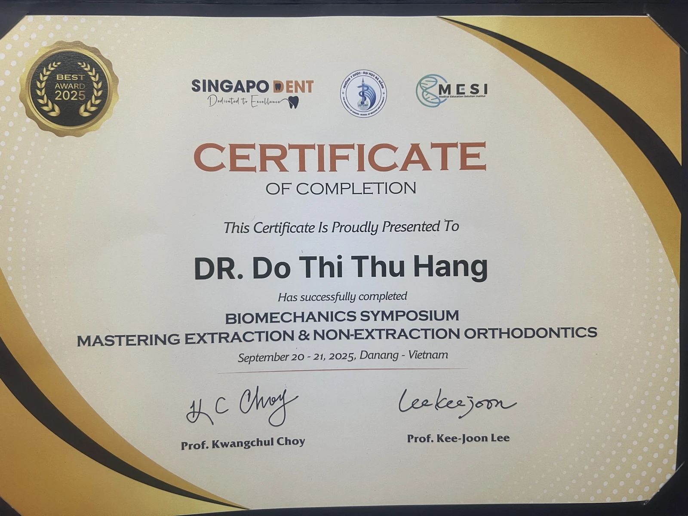

Chỉnh nha sinh cơ học cá nhân hóa
Lập kế hoạch dịch chuyển răng dựa trên khớp cắn, đặc điểm chân răng và mô nâng đỡ; điều chỉnh hệ lực và neo chặn theo từng trường hợp.
NHA KHOA THẨM MỸ · CHĂM SÓC CÁ NHÂN HÓA
Đồng hành cùng bạn trên hành trình tìm lại nụ cười tự nhiên, hài hòa và mang dấu ấn riêng.
Mỗi nụ cười là một câu chuyện.
Và bạn luôn là trung tâm.
01 / VỀ BÁC SĨ
Xin chào, tôi là bác sĩ Đỗ Thị Thu Hằng.
Tôi tin một nụ cười đẹp bắt đầu từ sức khỏe răng miệng và sự thấu hiểu mong muốn của mỗi người. Mỗi kế hoạch chăm sóc cần được cân nhắc dựa trên tình trạng thực tế, đặc điểm gương mặt và nhịp sống của bạn.

Trường Đại học Y Dược Huế · Năm cấp: 2018.
Bấm để xem lớn
Sở Y tế Đồng Nai · Năm cấp: 2018.
Bấm để xem lớn
Ba chứng nhận ưu tiên hiển thị trước; các chứng nhận còn lại xếp theo ngày cấp từ cũ đến mới.
Bấm xem các chứng nhận02 / LĨNH VỰC CHUYÊN MÔN
Khám phá các hướng chăm sóc thẩm mỹ.
Chỉ định cụ thể được trao đổi sau thăm khám.
Lập kế hoạch dịch chuyển răng dựa trên khớp cắn, đặc điểm chân răng và mô nâng đỡ; điều chỉnh hệ lực và neo chặn theo từng trường hợp.
Tìm hiểu giải pháp cải thiện hình dáng và màu sắc răng, với định hướng bảo tồn mô răng khi phù hợp.
Trao đổi về sắc độ răng mong muốn và lựa chọn phương pháp phù hợp với tình trạng răng miệng.
Cân nhắc chức năng ăn nhai và sự hài hòa thẩm mỹ trong kế hoạch phục hình cá nhân.
03 / HÀNH TRÌNH NỤ CƯỜI
Bạn được giải thích, được lựa chọn và được đồng hành trong từng bước.
Trao đổi cùng bác sĩChia sẻ mong muốn, đánh giá tình trạng răng miệng và tìm hiểu điều bạn quan tâm.
Trao đổi lựa chọn, giới hạn, chi phí dự kiến và thời gian trước khi quyết định.
Điều trị theo kế hoạch đã thống nhất, hướng dẫn chăm sóc và hẹn tái khám phù hợp.
04 / KẾT NỐI VỚI BÁC SĨ
Bạn muốn tìm hiểu điều gì về nụ cười của mình? Điền thông tin để chuẩn bị nội dung tư vấn qua Zalo.
Địa chỉ phòng khám sẽ được cập nhật
THỜI GIAN TIẾP NHẬNLịch làm việc sẽ được cập nhật